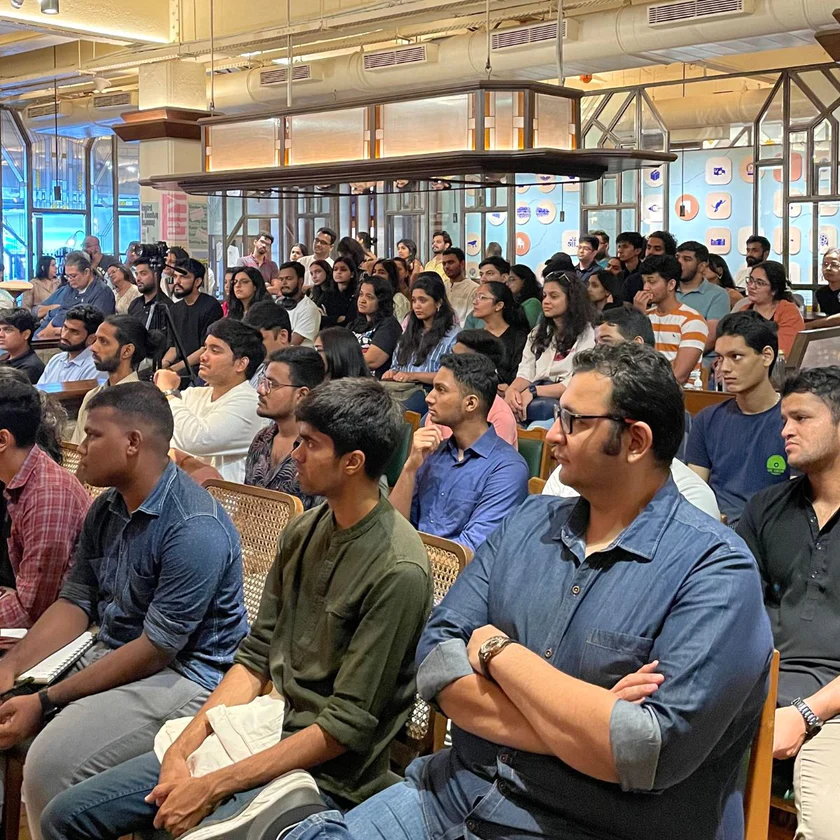
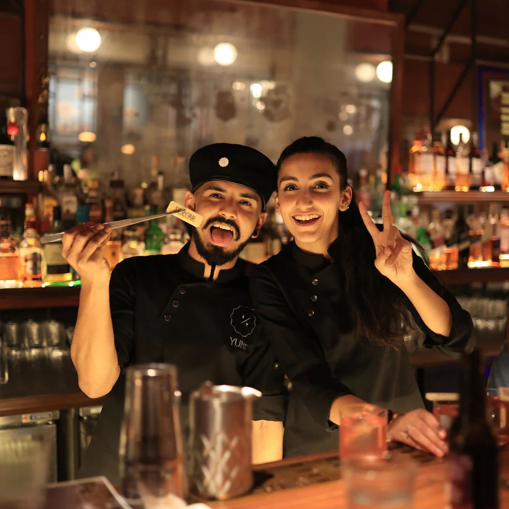
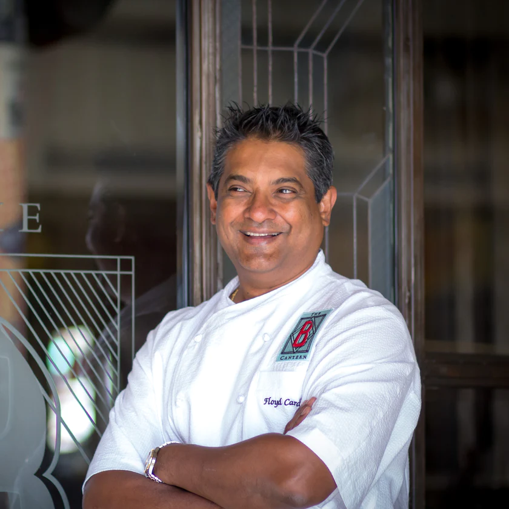

Whether it is for a good mood, for great food or for the greater good, The Bombay Canteen believes in elevating all experiences.
Canteen Class
The Canteen Class is a monthly series of sessions where passionate hospitality students can interact
with industry professionals to get a real understanding of what it takes to be a part of the industry.
Started in 2017, The Bombay Canteen has conducted 40+ Canteen Classes
with over 1200 hospitality students!


Bar Takeovers & Pop Ups
At The Bombay Canteen, we fuel our passion for extraordinary food,
beverage and service by hosting dynamic Bar Takeovers - a super fun guest shift where bartenders
from across the country and world spend one night taking over our bar with their signature cocktails!
We’ve had some of Asia’s and even the world’s top bars like Employees Only, The Clumsies, Trick Dog,
Hideaway, 28 HongKong Street, Smoke & Bitters, Sidecar and more.
Welfare of Stray Dogs
Welfare of Stray Dogs is a Mumbai-based animal welfare NGO that helps
street animals with basic care and meals.
Our association with WSD is our way of helping our furry friends find a home where
they are loved and taken care of.
Adopt Dont Shop!
If you wish to donate, you can get in touch with the good people at WSD through
Contact: +91 22 64222838
Email: wsdindia@gmail.com

The Floyd Cardoz Scholarship
Chef Floyd believed that the way to evolve as a chef and a human being was to constantly and
consistently help, inspire, mould, guide, and listen to those around him.
Inspired by Chef Floyd's life and to commemorate his love for mentorship and teaching,
we have partnered with the Welcomgroup Graduate School of Hotel Administration (WGSHA),
Manipal to carry his legacy forward. Our aim through this scholarship is to help aspiring
chefs receive the knowledge and skills they need for a better future.
Donations towards the Floyd Cardoz Scholarship will aid Jeeva to complete his culinary programme
at WGSHA thereby opening up fruitful opportunities for his future.